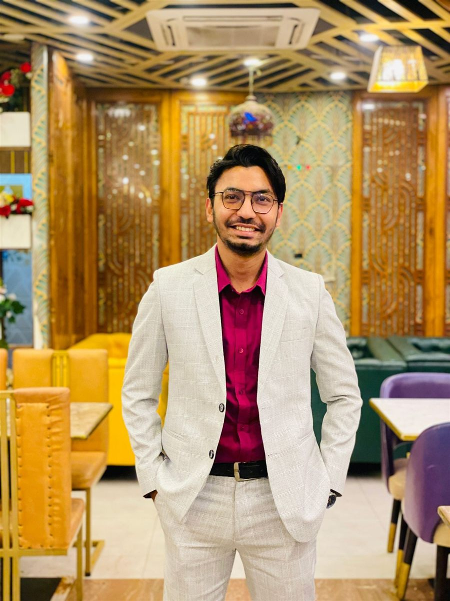
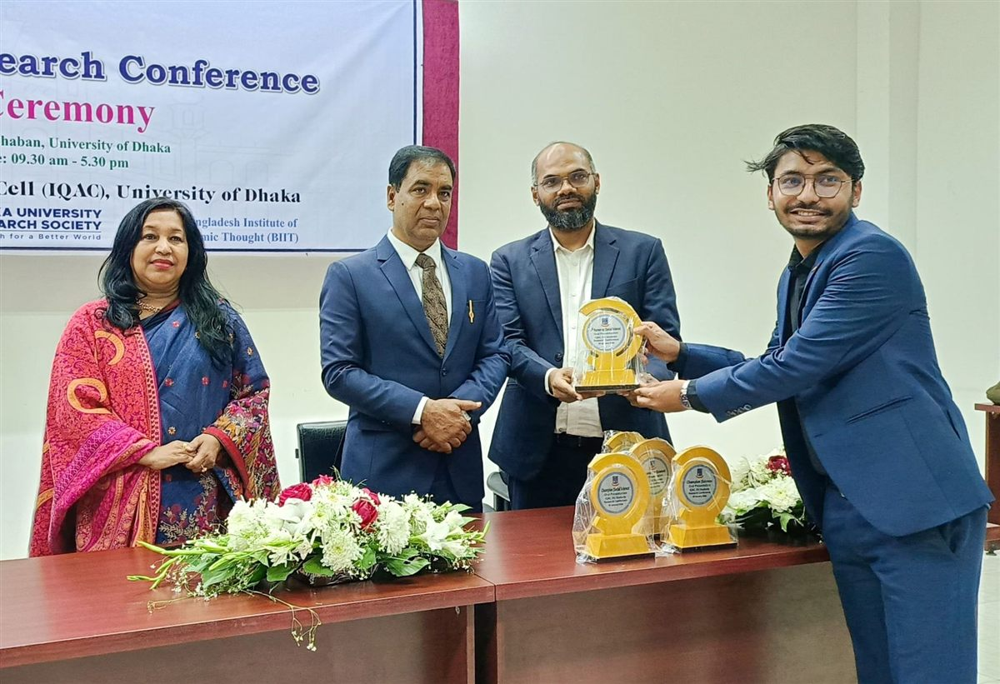
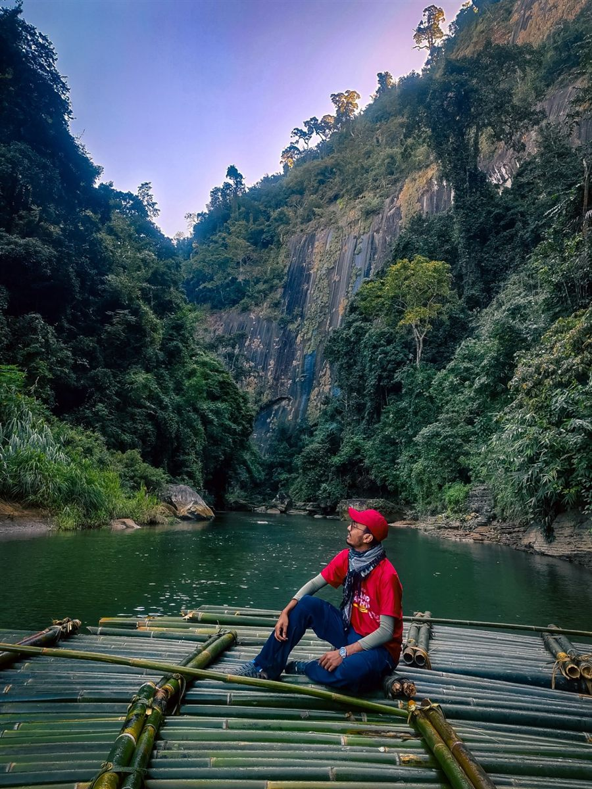
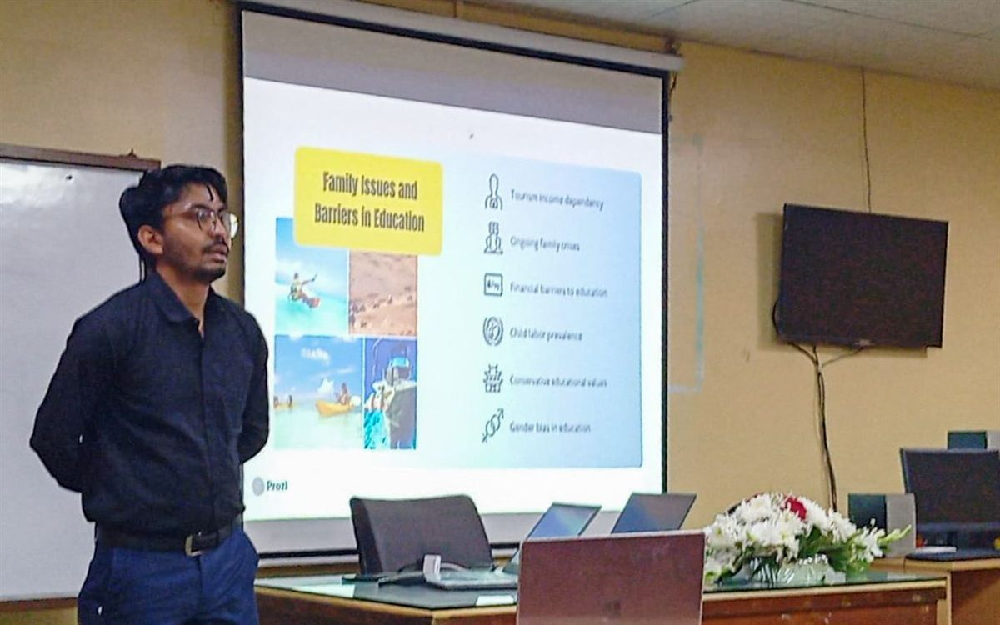
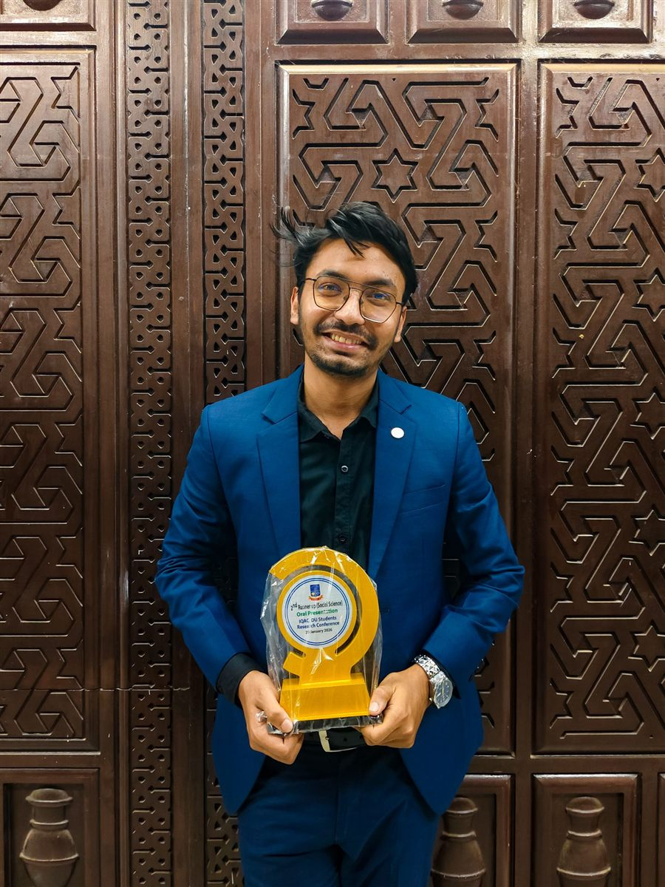
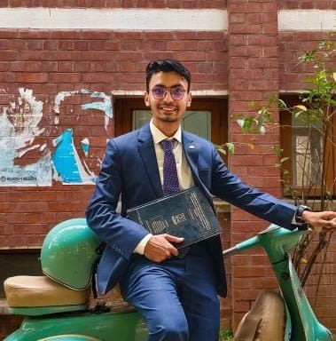

Ahsan
Ullah
Sociologist and researcher, University of Dhaka
I study where access breaks down at the edges of Bangladesh: hospitals that rural patients cannot reach, schools on an island cut off by the sea, health information that does not reach young women, and relief that does not reach flood-hit families.

About
I grew up in Cox's Bazar and now study sociology at the University of Dhaka, where I am completing my Master of Social Sciences. My work uses surveys, interviews, focus groups and mixed methods to understand who gets left out of health, education and disaster response, and why.
Alongside research I have spent years in the Bangladesh Scouts and in student volunteering. In 2024 I led 300 Sociology students who raised over BDT 30 lakh for flood-affected families in Feni, Cumilla and Noakhali. I am currently Research Manager and Treasurer at the Dhaka University Research Society.
- M.S.S. CGPA
- 3.60/4.00
- B.S.S. CGPA
- 3.52/4.00
- Papers written
- 4
- Awards and honours
- 16
Research
Papers
-
Pre-print, oral presentation
The socio-politics of relief management in developing countries: a study in the flood-affected southeastern region of Bangladesh
Read the pre-print -
Under peer review
Education in isolation: assessing socioeconomic barriers to primary and secondary educational access among low-income families on Saint Martin Island, Bangladesh
-
Under peer review
Gendered digital divides: assessing eHealth literacy and health-information-seeking behaviours among young adults on Saint Martin Island, Bangladesh
-
Accepted for publication
Bridging the gap: accessing healthcare in Bangladesh
Research projects
-
Gendered digital divides: eHealth literacy and health-seeking behaviour in the hill area of Volaganj, Sylhet
Since July 2026
Project Head, Dhaka University Research Society (DURS)
Leading the project from design to completion: methodology, field data collection, team coordination, analysis and reporting.
-
Gendered digital divides in perceived eHealth literacy among young adults on St Martin's Island: a convergent mixed-methods study
Since October 2025
Project Coordinator, DURS and Bangladesh Research Society (BDRS)
Designed the methodology, planned the project and coordinated field data collection and analysis.
-
Destination Dhaka: Urban Migration, Expectations and Reality (book, 2nd edition, UPL)
Oct to Dec 2022
Research Assistant to Dr. Anwara Begum, Senior Researcher, BIDS
Collected and analysed data, took photographs and designed the book cover.
-
Social media addiction, mental health and academic performance among students in Bangladesh
May 2021
Research Assistant, BK School of Research, under Dr. Bezon Kumar
Research design, data collection, analysis and report writing for the whole study.
-
Students at Social Change 2023: social stands against terror, militancy, drugs and early marriage
Feb to Dec 2023
District Coordinator, Cox's Bazar. Funded by Dhaka University Alumni Association, with MINISO CARES
Ran logistics, volunteer management and school campaigns across 13 institutions in Cox's Bazar district.
Experience
-
Nov 2025 to now
Research Manager
Dhaka University Research Society (DURS)
Leading research design, data collection, analysis and reporting while coordinating teams and keeping projects ethical and on time.
-
Jul to Nov 2025
Teaching Assistant
Department of Sociology, University of Dhaka
Supported course teaching, class activities, grading and student guidance.
-
May to Jun 2025
Research Assistant
Bangladesh Institute of Development Studies (BIDS)
Worked under Dr. Kazi Iqbal, Senior Researcher, at Bangladesh's government-funded development research institute.
-
Jul to Sep 2023
Data Collector
Bangladesh Institute of Development Studies (BIDS)
Fieldwork for the book Destination Dhaka by Dr. Anwara Begum.
-
Oct to Nov 2018
Skilled Volunteer
CCDB and NCA joint GBV and WASH Rohingya Response
Carried out field surveys and coordinated humanitarian activities in the Rohingya refugee camps.
Conferences
-
Coordinator, Young Researchers Initiative, Banglar Pathshala Foundation
Since Sep 2026
Coordinated 26 young researchers at the Syed Humayun Kabir Memorial Research Symposium 2026 (Sheraton Dhaka, 17 September) and 30 young researchers at the International Memorial Symposium on Jürgen Habermas (Goethe-Institut Bangladesh, 24 September), held with Friedrich-Ebert-Stiftung Bangladesh.
-
Paper presenter, 2nd International Youth Research Camp 2026, Colombo and Galle, Sri Lanka
2 to 7 May 2026
Presented a paper at the High Commission of Bangladesh in Colombo, with academic visits to the SAARC Cultural Centre and the Bandaranaike Centre for International Studies.
-
1st runner-up, IQAC DU Students Research Conference 2026
29 Jan 2026
Awarded by the Institutional Quality Assurance Cell, University of Dhaka, for a paper on educational access barriers among low-income families on Saint Martin Island.
-
Author and presenter, 10th ICWFM, IWFM, BUET, Dhaka
22 to 24 Feb 2025
-
Participant, 3rd International Conference on Revisiting Gender Equality and Sustainable Development, University of Dhaka
7 to 8 Aug 2024
-
Participant, international webinar on the impact of COVID-19, Acharya Jagadish Chandra Bose College, University of Calcutta
20 to 25 Jul 2020
Moments





Awards and honours
- 2026
University of Dhaka Scholarship for Academic Excellence
For outstanding undergraduate performance and classroom conduct.
- 2026
Gallantry Award, Bangladesh Scouts
One of three people in Bangladesh honoured for bravery during the Bangabazar fire, 2023.
- 2026
2nd place, 4×100 freestyle swimming
Inter-hall swimming and water polo competition, University of Dhaka.
- 2025
1st place, National Social Service Day Walkathon
Ministry of Social Welfare, Government of Bangladesh.
- 2025
Best Leader Award
Greater Chittagong Family, University of Dhaka.
- 2025
3rd place, freestyle swimming
Inter-hall swimming and water polo competition, University of Dhaka.
- 2024
Duke of Edinburgh's Award, Gold
Presented by the British High Commission in Dhaka for leadership and community service.
- 2024
Excellence of Leadership Award
Cox's Bazar-Ramu-Eidgaon Students' Forum, University of Dhaka.
- 2023
Community Development Award (Rover Scout)
Bangladesh Scouts, for contributions to community-based projects.
- 2023
National Service Award
Bangladesh Scouts, for voluntary service to national causes.
- 2023
3rd place, freestyle swimming
Inter-hall swimming and water polo competition, University of Dhaka.
- 2022
1st place, essay competition
National Mourning Day 2022, Bangladesh Scouts.
- 2019
Talent Pool Education Scholarship
Chattogram Board, Ministry of Education, for HSC results.
- 2018
Champion, Election Olympiad
SHUJAN. First place nationwide for knowledge of democratic governance and civic engagement.
- 2016
President's Scout Award
The highest national award in scouting, presented by the President of Bangladesh.
Leadership and service
Convener of the Sociology (DU) flood relief team in August and September 2024. We raised over BDT 30 lakh (about USD 24,000) from street and booth collections, organised 300 students, and brought food, medicine and rehabilitation support to more than 800 families in Feni, Cumilla and Noakhali.
Treasurer, Dhaka University Research Society
Since Feb 2026
Chief Volunteer Coordinator, DURC-10K 2026 (3rd edition)
Oct 2025 to Jan 2026
Head of Volunteers, Cox's Bazar Marathon 2025
Jul to Oct 2025
Coordinator, DU Sociology Earth Club, organising environmental and sustainability work
Oct 2023 to Jul 2025
General Secretary, Public University Medical-Engineering Students' Association, Eidgaon
Apr 2024 to Apr 2025
Chief Volunteer Organiser, DURC-10K Run 2025
Sep 2024 to Mar 2025
Bangladesh Scouts youth representative, APR Adults in Scouting Workshop, Fukuoka, Japan
1 to 5 Nov 2024
Dhaka University Rover Scout Group: General Member, Assistant Rover Mate, Rover Mate, then Senior Rover Mate (the highest rank)
Feb 2020 to Dec 2024
Volunteer, International Mother Language Day observances
2021 to 2024
Team Leader for Bangladesh Scouts, 23rd International Adventure Programme, India
Feb 2023
Committee member, 32nd Asia-Pacific Regional and 11th National Scout Jamboree
Aug 2022 to Mar 2023
Treasurer, Youth Voluntary Services for Bangladesh
Apr 2021 to Dec 2023
Education
-
Master of Social Sciences (M.S.S.) in Sociology
2025 to 2026
University of Dhaka. CGPA 3.60 out of 4.00
-
Bachelor of Social Sciences (B.S.S.) in Sociology
2020 to 2025
University of Dhaka. CGPA 3.52 out of 4.00, university scholarship
Monograph: Bridging the Gap: An Exploratory Study of Challenges and Barriers to Accessing Healthcare Services in Public Medical Hospitals between Major Cities and Rural Areas in Bangladesh.
-
Higher Secondary Certificate, Humanities
2017 to 2019
Cox's Bazar Government College. GPA 5.00 out of 5.00, Talent Pool scholarship
-
Dakhil (SSC equivalent), Humanities
2015 to 2017
Almachia Fazil Madrasah, Cox's Bazar. GPA 4.55 out of 5.00
Leadership training
-
AI-Integrated Leadership Program 2025
Oct to Dec 2025, in progress
Aspire Institute (Harvard Business School), online
-
Aspire Leaders Program 2025, Cohort 1
Jan to Mar 2025, graduated
Aspire Institute (Harvard Business School), online
-
CareerX-35
Sep to Oct 2024, graduated
Bangladesh Youth Leadership Center (BYLC)
Certificates (16)
- IBM SPSS Statistics Expert, Bangladesh Research Society, 2025
- Basic Data Analysis with Stata, Bangladesh Research Society, 2025
- Communicating what research is and isn't, Elsevier Research Academy, 2025
- Data repositories to store your data, Elsevier Research Academy, 2025
- Green Skills and Social Accountability, GYLCx, 2025
- KoBoToolbox for Beginners, Data for Development (Coursera), 2024
- Accelerate Your Learning with ChatGPT, Deep Teaching Solutions (Coursera), 2024
- Google AI Essentials, Google (Coursera), 2024
- Disaster Preparedness, University of Pittsburgh (Coursera), 2024
- Volunteering for Flood Management, Department of Sociology, University of Dhaka, 2024
- Human Rights, Our Voices, Our Choices project funded by the European Commission, 2024
- Public Speaking, Bohubrihi, 2024
- Volunteerism for Social Change, BYLCx, 2021
- Competency-Based English Communication Skills, ICT Division (GoB) with USAID and UNDP, 2021
- Digital Security Essentials, National Cyber Agency (GoB), 2021
- Volunteer, Income Tax Fair 2019, National Board of Revenue
Skills
Research methods
Survey design, in-depth interviews, focus group discussions, key informant interviews, mixed methods, data analysis, report writing, manuscript development
Software
SPSS, Stata, R, KoBoToolbox, Zotero, Mendeley, Microsoft Office, Google Workspace, Canva, AI tools
Languages
Bengali (native), English (professional)
Referees
Dr. Fatema Rezina Iqbal
Professor and Chairperson, Department of Sociology, University of Dhaka
Dr. Debasish Kumar Kundu
Associate Professor, Department of Sociology, University of Dhaka
Dr. Mir Shariful Islam
Associate Professor, Department of Oceanography, University of Dhaka, and Rover Scout Leader, Dhaka University Rover Scout Group
Referee contact details are available on request.
Let's work together
I'm open to research collaborations, graduate study opportunities and fieldwork partnerships.
- Emailahsan.soc.du@gmail.com
- University emailahsan-2019814546@soc.du.ac.bd
- Phone+880 1836 708866
- Based in
University of Dhaka, Dhaka, Bangladesh